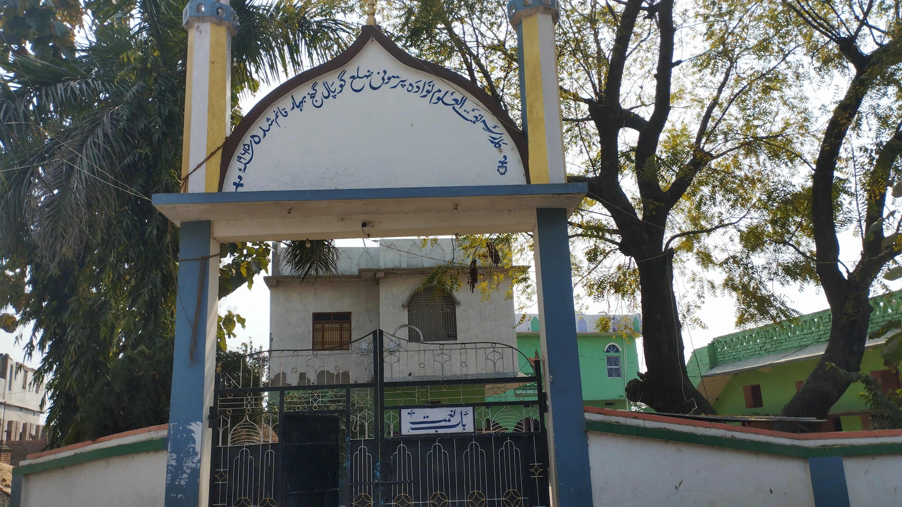

Official Digital Identity of the Village
Where community, culture, and progress meet in Nawada Parsauni
A welcoming village portal for families, students, visitors, and residents of Nawada Parsauni, Uchkagaon Block, Gopalganj, Bihar. Stay connected to local updates, education, services, history, and village pride in one trusted place.
English
हिन्दी (Hindi)
اردو (Urdu)

Bihar Village Spirit
Rooted in harmony, learning, and shared progress
From fields and festivals to schools and services, this portal reflects the heart of village life.


Local Promotions
Featured Advertisements
Discover hospitals, shops, coaching centers, medical stores, and local services serving Nawada Parsauni and nearby families.
Village Introduction
About Nawada Parsauni
Nawada Parsauni is a vibrant rural community in Uchkagaon Block, Gopalganj, Bihar. This portal is designed to feel official, useful, and alive every day for villagers, students, and well-wishers of the village.
Panchayat
Nawada Parsauni Gram Panchayat
Included Villages
Nawada Parsauni
Manbodh Parsauni
Muri Barari
Barari Harkesh
Total Area
357 hectares (3.57 km2)
Neighbor Villages
Barari Harkesh
Kaparpura
Domaria
Gurmha
Post Office
Manbodh Parsauni
Block
UchkaGaon
District
Gopalganj, Bihar, India
Languages Spoken
Bhojpuri, Hindi, Urdu
Village Snapshot
Community Statistics
A quick numerical view of village life, showing the scale, balance, and strength of Nawada Parsauni.
Population
0
Total residentsHouseholds
0
Village homesLiteracy Rate
0
Learning momentumArea
3.57 km2
357 hectaresLanguages Spoken
भोजपुरी (Bhojpuri)
हिन्दी (Hindi)
اردو (Urdu)
Schools
0
Local learning supportVillage Pride
People Who Inspire the Village
A village grows stronger when achievement is visible. This section celebrates the energy of students, teachers, farmers, and youth who carry Nawada Parsauni forward.
Student Excellence
Recognizing students preparing for board exams, competitive tests, and higher studies with discipline and ambition.
Farmer Strength
Celebrating the farmers whose hard work keeps the village productive, resilient, and deeply connected to the land.
Community Harmony
Highlighting the spirit of togetherness that defines village festivals, social support, and everyday life.
Youth Participation
Youth groups, sports talent, and local volunteers are helping build an active and confident future for the village.
Latest Updates
Village Announcements
Important information for daily use, from meetings and roads to electricity and public schemes.
12 March 2026
Gram Sabha Meeting Schedule
Gram Sabha meeting will be held at Panchayat Bhawan at 11:00 AM for village development updates.
Read More
All ward members and residents are requested to attend with local issues and suggestions.
10 March 2026
Road Construction Update
Main link road repair near the school route is ongoing and expected to be completed this month.
Read More
Please use alternate lanes from 9:00 AM to 4:00 PM during construction hours.
8 March 2026
Electricity Shutdown Notice
Power supply will be interrupted from 10:00 AM to 2:00 PM due to feeder maintenance work.
Read More
Maintenance will improve evening voltage stability in Nawada Parsauni local lines.
6 March 2026
Government Scheme Verification Camp
Beneficiary verification for PM Awas and pension schemes at Panchayat office this week.
Read More
Bring Aadhaar card, passbook, and registered mobile number for document confirmation.
4 March 2026
School Holiday Information
Government Middle School and nearby institutions will remain closed for local administrative activity.
Read More
Regular classes will resume from the next working day as per school notice.
Student Resources
Helpful Links for Learners and Families
Built to be useful every day for students, parents, and teachers in and around Nawada Parsauni.
School & Education Info
Find nearby education details, local learning options, and school-related information.
Open Education PageScholarship Preparation
Keep Aadhaar, bank passbook, marksheet, and mobile number ready for scholarship and scheme applications.
See Latest NoticesExam Readiness
Use this portal to stay aware of school updates, holiday notices, and local academic events.
Ask for UpdatesDigital Village Access
This mobile-friendly portal helps students browse village information, maps, notices, and services quickly.
View Village MapDaily Utility
Core Services Directory
Village: Nawada Parsauni | Block: UchkaGaon | District: Gopalganj | State: Bihar



Emergency Help
Quick Contact Support
Fast access to essential public help for villagers, especially during urgent situations.
Emergency Numbers
Village Help Desk
Use the contact page or phone links for quick communication, updates, and support coordination when needed.
Open Contact FormElection & Public Assistance
Election-related support has been moved to the dedicated emergency page. Open it to view BLO details and voter helpline information.
Open Emergency PageFor official updates, refer to the Election Commission of India.
Village Journey
History Timeline
A simple timeline to honor the continuity of village life, local identity, and community development.
Agrarian Foundation
Nawada Parsauni grew through farming traditions, family bonds, and a village-centered way of life shaped by the land.
Expansion of Social Life
Community spaces, local worship places, and village gathering points strengthened shared culture and mutual support.
Learning for the Next Generation
Schools, madrasas, and coaching efforts gradually increased access to education and broadened village aspirations.
Digital Community Presence
This portal represents a new chapter where village information, identity, and daily utility come together online.
Festivals & Events
Village Calendar
Monthly public event list for community coordination, celebrations, and social participation.
August 2026
05 Aug 2026
Gram Sabha
Gram Sabha Meeting
Village development discussion and ward-level issue review with community participation.
Location: Panchayat Bhawan, Nawada Parsauni
15 Aug 2026
Festival
Independence Day Celebration
Flag hoisting, cultural program, and village youth participation activities.
Location: Government Middle School Grounds
20 Aug 2026
School
School Annual Function
Student performances, awards, and parent-teacher community engagement.
Location: Nawada Parsauni Govt Middle School
24 Aug 2026
Health Camp
Vaccination Camp
Routine immunization and health awareness camp for children and senior citizens.
Location: Anganwadi Center, Nawada Parsauni
29 Aug 2026
Festival
Religious Festival Gathering
Community prayer and peace-focused social gathering with local coordination support.
Location: Community Religious Grounds
Village Gallery
Photos of Community Life
Explore local views, festivals, fields, learning spaces, and shared moments from Nawada Parsauni.


Nearby Support
Important Nearby Locations
Key nearby institutions for public safety, healthcare, banking, and transport support for Nawada Parsauni residents.
Police
UchkaGaon Police Station
Primary law and order support point for the block and nearby villages.
Distance: Approx. 8 km from Nawada Parsauni
Address: UchkaGaon Block, Gopalganj, Bihar
Phone: 112
🗺 View on Google MapsHospital
Sadar Hospital, Gopalganj
Major government referral hospital with emergency and general treatment facilities.
Distance: Approx. 15 km from Nawada Parsauni
Address: Hospital Road, Gopalganj, Bihar
Phone: 108
🗺 View on Google MapsBank
State Bank of India, Thawe
Nearest major bank branch for savings accounts, withdrawals, and government scheme transactions.
Distance: Approx. 8 km from Nawada Parsauni
Address: Rasool Market, Thawe, Gopalganj, Bihar
Phone: +91 6152 220000
🗺 View on Google MapsRailway
Thawe Junction Railway Station
Nearest key railway station for regional rail travel and inter-district connectivity.
Distance: Approx. 8 km from Nawada Parsauni
Address: Station Road, Thawe, Gopalganj, Bihar
Phone: 139
🗺 View on Google MapsFind the Village
Google Maps Location
Locate Nawada Parsauni, UchkaGaon Block, Gopalganj District, Bihar on the map.
Nawada Parsauni, Bihar
Use the interactive map to locate the village, nearby routes, and the surrounding region.
Open Full MapVillage Economy
Local Business & Shop Directory
Discover village shops, services, clinics, and education centers that support everyday life in Nawada Parsauni.
This directory is for community visibility and convenience. Contact details should be verified before making any transaction or visit.
Trust & Identity
Panchayat Verification
A visible trust layer helps this portal feel reliable and community-owned.
Verified by Gram Panchayat
Mukhiya Name: To be updated by Panchayat
Village Identity: Nawada Parsauni, Post Manbodh Parsauni, Block Uchkagaon, District Gopalganj, Bihar
Stay Connected
Contact Nawada Parsauni
Get in touch for requests, information updates, or community suggestions.
Phone
+91 99555 00881Location
Nawada Parsauni, Bihar